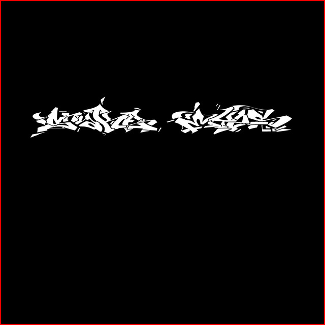
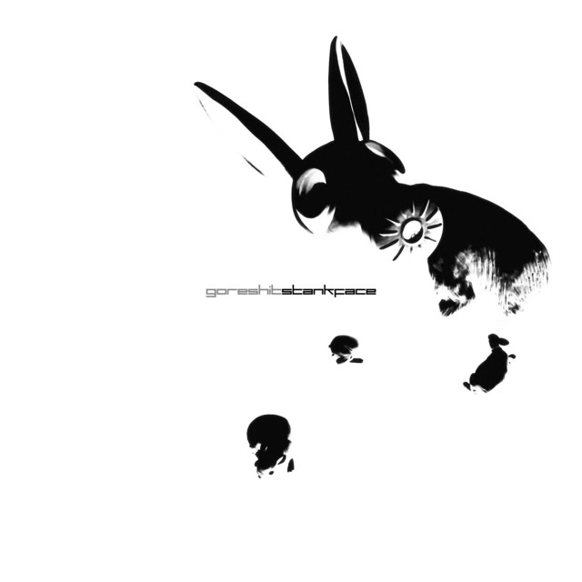

El primer álbum de MF DOOM, a través de skits narra el nacimiento de un villano. Acorde, muchas de las canciones contienen pequeños fragmentos de canciones, sonidos o instrumentos de series y películas de superhéroes antiguas además de sampleo de jazz. Es un álbum algo extraño y definitivamente poco convencional pero que aún así consigue tener un sonido decente y todas las partes encajan entre ellas, aunque se me ha hecho algo pesado de escuchar después de un rato. Mis canciones favoritas han sido Doomsday, Red and Gold y Tick, Tick... siendo esta última la más inusual del álbum.
Imágen |
Álbum |
Artista |
Duración |
Fecha de salida (Y/M/D) |
Nota (sobre 10) |
Fecha de review (Y/M/D) |
|---|---|---|---|---|---|---|
|
MF DOOM |
58 min |
1999/10/19 |
4.5 |
2023/02/13 |
|
|
DEMONDICE |
23 min |
2019/03/02 |
9 |
2023/01/18 |
|
|
Lil Peep |
45 min |
2018/09/09 |
4.5 |
2023/01/08 |
|
|
Lil Peep |
23 min |
2017/08/15 |
5.5 |
2023/01/08 |
|
|
Kanye West |
40 min |
2013/06/18 |
4.5 |
2023/01/04 |
|
|
King Gizzard & the Lizard Wizard |
80 min |
2022/04/22 |
5 |
2022/12/17 |
|
 |
100 gecs |
6 min |
2022/12/03 |
3.5 |
2022/12/07 |
|
 |
Goreshit |
53 min |
2017/03/12 |
8 |
2022/12/07 |
|
|
Sewerslvt |
89 min |
2021/11/12 |
7.5 |
2022/12/02 |
|
|
Jack Stauber |
44 min |
2018/04/14 |
8.5 |
2022/12/02 |
|
|
Goa |
30 min |
2021/11/11 |
7 |
2022/11/30 |
|
|
Goa |
22 min |
2020/04/17 |
5 |
2022/11/28 |
|
|
Bo En |
26 min |
2013/09/06 |
6 |
2022/11/25 |